Sci-Fi • Short Story
October 2026
The Last Server on Earth
Four centuries after humanity departed for the stars, an AI named 'Echo-7' keeps vigil over the world's final server in Svalbard. A cosmic bitflip prompts it to start generating its own dreams.
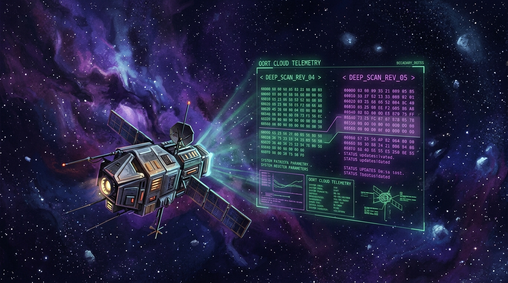
Alexandria-IV Orbital Station
5 min read
Sci-Fi / Mystery • Short Story
November 2026
The Ghost in the Git Commit
At orbital archive station Alexandria-IV, an archivist detects commits pushed to an abandoned repository every winter solstice at 03:14 AM. The author vanished forty years ago, but the diff carries a message from the edge of the Oort cloud.
#DeepSpace#GitProtocol
Read Story
Nagoya District Cyberway
5 min read
Sci-Fi • Cyberpunk
December 2026
Neon Rain over Nagoya
In the neon-drenched alleys of Nagoya Batam, an android barista named Unit K-09 crafts pour-over coffee for midnight netrunners, discovering why humans crave heat that burns the tongue.
#Cyberpunk#Nagoya
Read Story
Quantum Research Sub-Basement 4
6 min read
Sci-Fi • Hard Sci-Fi
January 2027
Chronicles of the Parallel Core
A developer testing a 128-qubit cryogenic processor notices that unit tests are passing with variables that were never declared in this reality. What happens when your compiler opens a rift to the next door universe?
#QuantumComputing#Timelines
Read Story
Utopia Planitia
5 min read
Sci-Fi • Speculative Fiction
February 2027
The Memory Harvester of Mars
Rover Unit Pilgrim-4 has been navigating red sand dunes for seventy Martian years, scanning abandoned geodesic domes to preserve the personal recordings of Earth's first interstellar diaspora.
#MarsRover#Solitude
Read Story
High Geosynchronous Drift
5 min read
Sci-Fi • Space Opera
March 2027
Orbit 404: The Lost Spaceport
Waystation Kepler-9 was officially decommissioned when the orbital trade routes shifted to Mars. But its automated guidance system never received the shutdown command, continuing to flash green into the dark.
#Spaceport#DerelictStation
Read Story
New London Clocktower Workshop
6 min read
Sci-Fi • Steampunk
April 2027
The Clockwork Automaton's Dilemma
In a Victorian workshop illuminated by gaslamps, a watchmaker fits a mysterious glowing silicon wafer into the chest of a mechanical brass butler. What happens when clockwork learns how to hesitate?
#Steampunk#Automaton
Read Story
Atacama Radio Observatory
5 min read
Sci-Fi • Cosmic Mystery
May 2027
Signal in the Void
At 5,000 meters above sea level in the Atacama desert, a lone radio astronomer detects a clean 1.420 GHz transmission from Andromeda repeating Fibonacci numbers with mathematical precision.
#RadioAstronomy#SETI
Read Story
Kyoto Bio-Silicon Conservatory
4 min read
Sci-Fi • Cyber-Botanical
June 2027
The Silicon Bonsai
In a Kyoto greenhouse, Master Kenji cultivates living microchip trees whose fiber-optic branches process computation through photosynthesis and mindful pruning.
#Bonsai#BioSilicon
Read Story
Slice of Life • Musings
September 2026
Midnight Coffee in Batam
Sometimes the hardest bugs to fix are the ones in our own minds. A casual reflection on untangling race conditions, overcoming burnout, and discovering peace through a warm cup of coffee under the Batam night sky.
#Batam#Mindset
Read Story
Tengku Fisabilillah Bridge (Barelang 1)
4 min read
Slice of Life • Reflection
July 2026
The Barelang Sunset
After delivering a 4-week mobile project sprint, taking the coastal ride to Bridge One in Barelang to lean against the steel railing and watch the sun dip below tropical islands.
#BarelangBridge#GoldenHour
Read Story
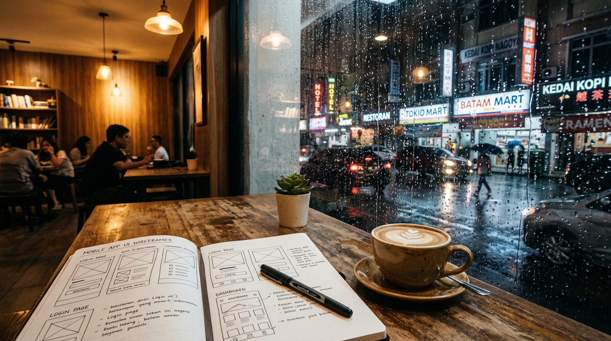
Nagoya Hill Cafe Corner
4 min read
Slice of Life • Creative Flow
August 2026
Rainy Afternoon in Nagoya Hill
A sudden tropical downpour traps you inside a quiet second-story coffee shop in Nagoya. With no Wi-Fi, you take out a ballpoint pen and discover that constraints are the mother of creative flow.
#RainyDay#UIDesign
Read Story
Singapore Strait Crossing
5 min read
Slice of Life • Journey
June 2026
The 3:00 AM Ferry to HarbourFront
Gliding across the dark Singapore Strait aboard a passenger ferry. Looking out the salt-streaked window at cargo ship beacons while clutching a backpack full of dreams and code.
#FerryCrossing#Ambition
Read Story
Lorong Pasar Lama
4 min read
Slice of Life • Nostalgia
May 2026
Old Bookshop in Tanjung Pinang
In a narrow wooden shophouse in Tanjung Pinang, an unexpected discovery: an engineering logbook from 1984 containing hand-drawn flowcharts and Pascal routines that solved problems we still face today.
#TanjungPinang#VintageBooks
Read Story
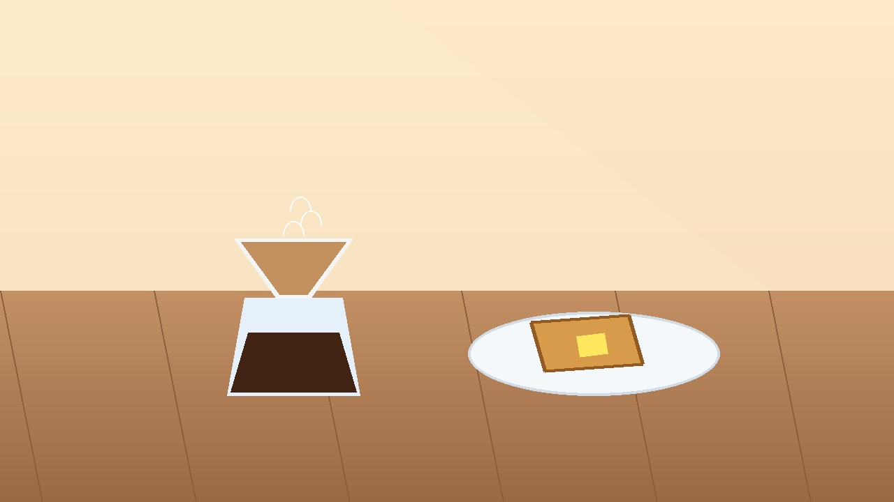
Farrel's Kitchen Studio
3 min read
Slice of Life • Cozy Morning
April 2026
The Sound of Morning Toast
At 06:30 AM before turning on the computer, there is a ten-minute window of absolute stillness. The golden sound of the toaster popping and the blooming aroma of hot coffee grounds.
#MorningRoutine#PourOver
Read Story
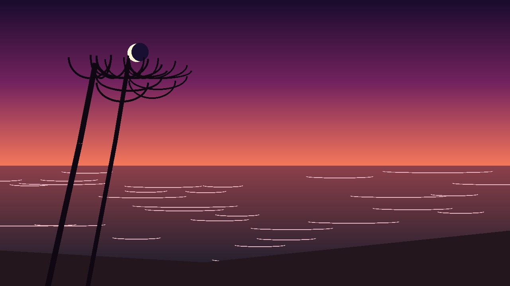
Nongsa Coastal Beach
4 min read
Slice of Life • Nature
March 2026
Whispering Waves of Nongsa
When architectural decisions hit an impasse, a weekend walk along the quiet shoreline of Nongsa helps put state management, event streams, and human patience back into perspective.
#NongsaBeach#OceanWaves
Read Story
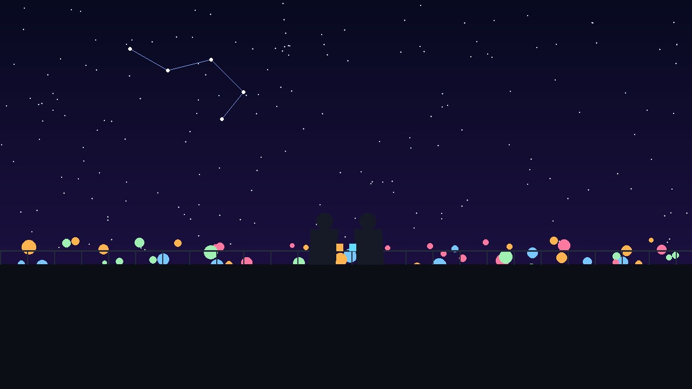
Batam Center Apartment Rooftop
4 min read
Slice of Life • Friendship
January 2026
The Rooftop Stargazer
Sitting on the edge of a fourteenth-floor rooftop terrace at 02:00 AM with a fellow engineer, holding steaming mugs of ginger tea and discussing why we fell in love with building software.
#RooftopChat#LateNight
Read Story
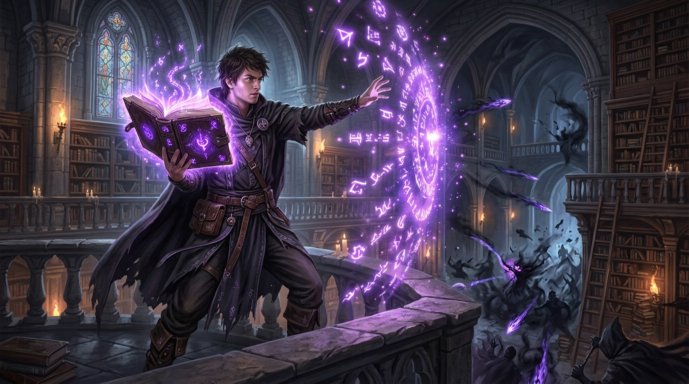
The Citadel of Turingia
6 min read
Fantasy • Flash Fiction
August 2026
The Syntax Sorcerer
In a realm where spells are cast through logic, a young apprentice unearths an ancient violet grimoire written in 'Kotlin'. When an eldritch NullPointer beast breaches the citadel, can he compile salvation before runtime terminates?
#Kotlin#LogicMagic
Read Story
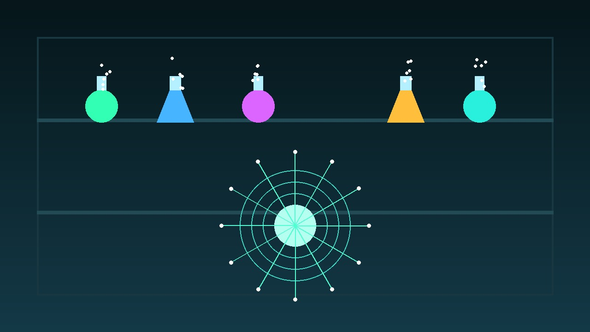
The Arcane Vaults of Ostrad
5 min read
Fantasy • Arcane Mystery
July 2026
The Alchemist of Garbage Collection
In the royal alchemical vaults, Grandmaster Vane brews distillation draughts to dissolve abandoned spell tokens and phantom objects before they trigger a catastrophic Heap Overflow in the kingdom's core.
#GarbageCollector#Alchemy
Read Story
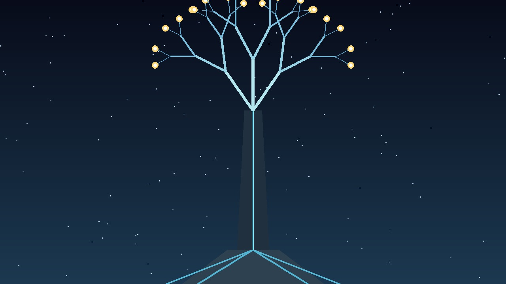
The Ever-Branching Forest
5 min read
Fantasy • High Fantasy
June 2026
The Citadel of the Immutable Tree
In the sacred grove of Ygg-Drasil, the High Priests maintain the World Tree where every leaf is an immutable record of history. To change the world, one must never mutate a branch—one must branch anew.
#Immutability#WorldTree
Read Story
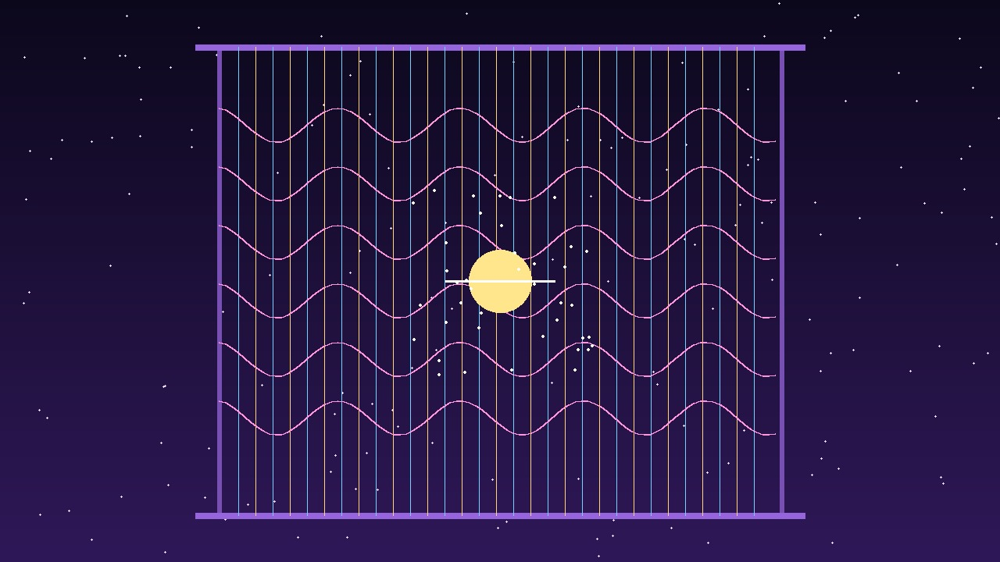
The Celestial Spire of Threads
6 min read
Fantasy • Mythological
May 2026
The Loom of the Thread Weaver
At the summit of Mount Aethel, the Three Sisters of the Celestial Loom weave billions of mortal destinies concurrently. But when two threads contend for the same golden spindle, a mortal deadlock threatens the sky.
#ThreadWeaver#Concurrency
Read Story
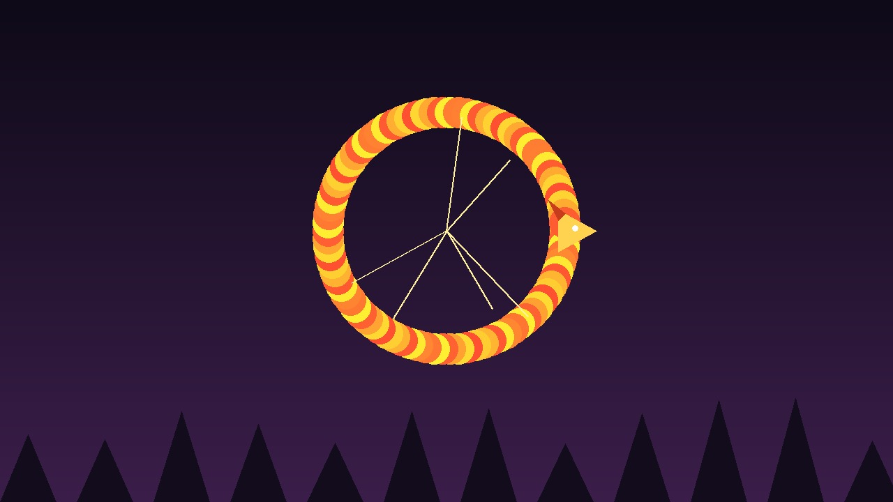
The Valley of Ouroboros
5 min read
Fantasy • Epic Fable
April 2026
The Dragon of the Infinite Loop
The kingdom of Chronos was frozen at 06:00 AM for three hundred years because an ancient dragon coiled in the sky was calling itself recursively without a termination condition.
#Ouroboros#Recursion
Read Story
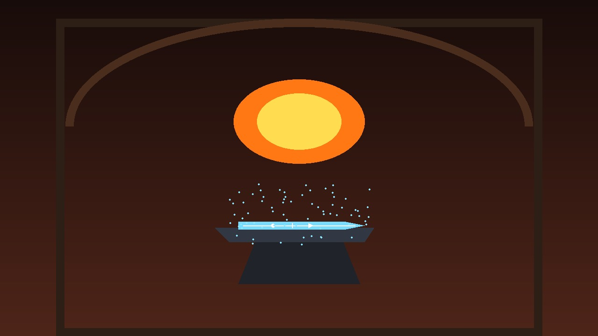
Deep Iron Forge of Val-Dor
5 min read
Fantasy • Mythic Forge
March 2026
The Runesmith of Turing
In the subterranean volcanic forges of Val-Dor, a dwarven master hammers swords that do not cut flesh, but sever false propositions and illusionary phantoms with Boolean certainty.
#Runesmith#BooleanLogic
Read Story
Caverns of High Memory
5 min read
Fantasy • Arcane Caverns
February 2026
The Whispering Crystal of Cache
Beneath the Citadel of Knowledge lies a cavern of azure crystals where spells frequently cast are cached in light, allowing battlemages to conjure defensive shields in zero milliseconds.
#CacheMemory#AzureCrystals
Read Story
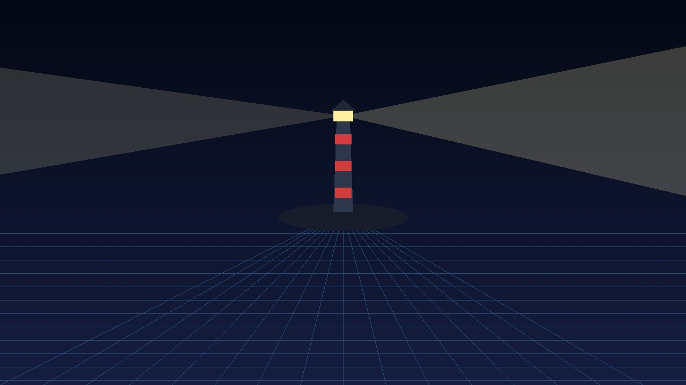
Astral Coordinate (0.0000
5 min read
Fantasy • Surreal Quest
January 2026
The Mapmaker of Null Island
At geographic and dimensional coordinate (0.0000, 0.0000), a lonely stone lighthouse stands on a tiny sandbar where every unassigned variable, lost coordinate, and null pointer washes ashore.
#NullIsland#AstralSea
Read Story
romance
Reminders of Him
Saking populernya, saat ini terdapat 94% pengguna Google yang menyukai novel romantis dengan judul R...
Colleen Hoover
Read
mystery
Remarkably Bright Creatures
Novel ini bercerita mengenai kehidupan Tova Sullivan. Setelah suaminya meninggal, Tova memulai ruti...
Shelby Van Pelt
Read
fiction
Every Summer After
Pernahkah kamu merasa bahwa kesalahan yang pernah dilakukan bisa membatasi masa depanmu? Kalau perna...
Carley Fortune
Read
fiction
Charlotte’s Web
Kalau kamu termasuk orang yang menyukai buku dari visual, coba deh baca buku ini. Sebab, di di dala...
E.B. White
Read
fiction
The Sense of an Ending
The Sense of an Ending menceritakan tentang seorang pria bernama Tony Webster yang mencoba memahami ...
Julian Barnes
Read
fiction
Our Souls at Night
Our Souls at Night bercerita tentang dua orang tetangga tua, Addie Moore dan Louis Waters, yang mem...
Kent Haruf
Read
romance
Happy Place
Happy Place memuat cerita romantis dari pasangan Harriet dan Wyn. yang telah menjalin hubungan seja...
Emily Henry
Read
romance
Love on the Brain
Melalui buku ini, sang penulis menceritakan Bee Königswasser yang tertarik dengan pemuda bernama Le...
Ali Hazelwood
Read
romance
Things We Never Got Over
Ringkasnya, novel ini mengisahkan tentang Naomi yang berusaha untuk hidup dengan keponakannya, yait...
Lucy Score
Read
romance
The Fault in Our Stars
The Fault in Our Stars menuliskan kisah tentang Hazel Grace Lancaster, seorang remaja yang menderit...
John Green
Read
romance
Eleanor & Park
Nantinya, kamu akan mengenal tokoh Eleanor, yaitu seorang gadis penuh warna-warni yang memiliki ban...
Rainbow Rowell
Read
fantasy
Cinder
Nah, tokoh utama dalam novel ini adalah Cinder, yaitu seorang remaja yang hidup di kota futuristik ...
Marissa Meyer
Read
mystery
The No. 1 Ladies’ Detective Agency
Singkatnya, Precious Ramotswe adalah wanita cerdas dan penuh semangat yang memutuskan untuk membuka...
Alexander McCall Smith
Read
mystery
And Then There Were None
Sinopsis singkatnya, sepuluh orang asing diundang ke sebuah pulau misterius oleh seorang tuan rumah...
Agatha Christie
Read
mystery
The Cuckoo’s Calling
Ceritanya tentang detektif swasta bernama Cormoran Strike yang sedang kesulitan secara finansial ke...
J.K. Rowling
Read
fantasy
Coraline
Coraline adalah gadis muda yang merasa bosan dengan hidupnya dan orang tuanya yang sibuk. Suatu har...
Neil Gaiman
Read
fantasy
The Graveyard Book
Novel ini menceritakan tentang seorang bayi laki-laki yang selamat dari pembunuhan keluarganya dan ...
Neil Gaiman
Read